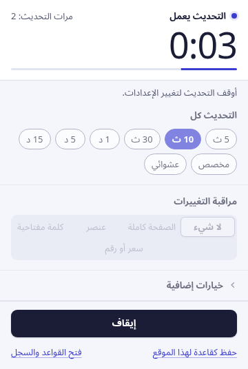
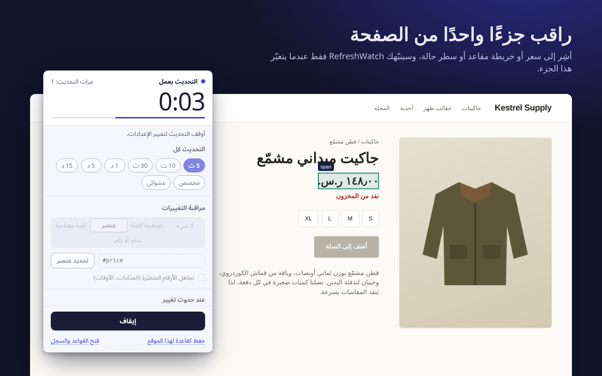
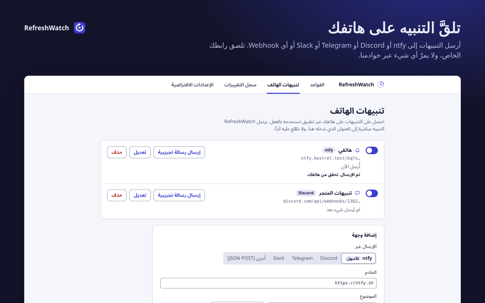
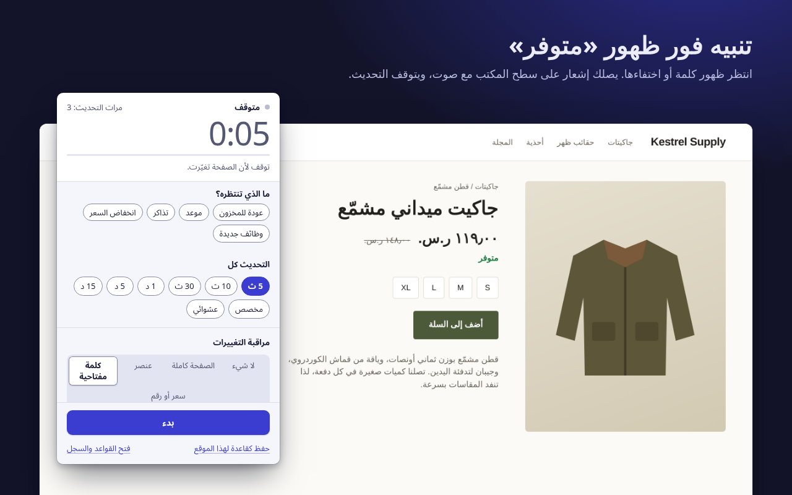

يتولّى التحديث، ولا يفوتك أي تغيير.
يعيد RefreshWatch تحميل أي تبويب في Chrome وفق مؤقت، وينبّهك لحظة تغيّر الصفحة: سعر جديد، أو كلمة مثل «متوفر»، أو موعد أصبح شاغرًا.
دون حساب، ودون خوادم لنا. يعمل على Chrome 120 والإصدارات الأحدث.

أخبره بما يراقبه
للتحديث التلقائي البسيط يكفي أن تختار فترة زمنية. أضِف مراقبة، وسيقارن RefreshWatch الصفحة بعد كل إعادة تحميل، ثم ينبّهك بإشعار وصوت.
الصفحة كاملة
أي تغيير في النص الظاهر. فعّل «تجاهل الأرقام المتغيّرة» حتى لا تتسبب الساعات والعدّادات في تنبيهات كاذبة.
عنصر واحد
أشِر إلى سعر أو خريطة مقاعد أو سطر حالة. هذا الجزء وحده هو المهم، ويمكن لبقية الصفحة أن تتغيّر كما تشاء.
كلمة مفتاحية
تنبيه حين تظهر كلمة مثل «متوفر»، أو حين تختفي عبارة مثل «لا توجد مواعيد متاحة».

تنبيهات على هاتفك، وعند انخفاض الأسعار
أضِف موضوع ntfy الخاص بك، أو عنوان Discord أو Telegram أو Slack، أو أي Webhook، وسيرسل RefreshWatch التنبيه إليه مباشرة. لا حساب لدينا، ولا يمرّ أي شيء عبر خوادمنا.
إشعار على الهاتف عند تغيّر موقع ويب · تنبيه انخفاض السعر في Chrome (بالإنجليزية)

مجانًا: ميزات تتقاضى عليها إضافات أخرى رسومًا
كل ميزة أدناه لا تتوفر إلا ضمن باقة مدفوعة في إضافة واحدة على الأقل من إضافات التحديث التلقائي أو مراقبة الصفحات الشائعة. أما في RefreshWatch فهي جزء من الإضافة ببساطة، دون باقة مدفوعة ودون فترة تجريبية ودون حساب. وبعض الميزات المدفوعة لدى غيره، مثل وحدات الماكرو وتنبيهات البريد الإلكتروني أو الرسائل النصية والفحص السحابي، لا يقدّمها RefreshWatch أصلًا.
| الميزة | ما تحصل عليه | RefreshWatch |
|---|---|---|
| مراقبة جزء من الصفحة | اختر أي عنصر، ولن يصلك تنبيه إلا عند تغيّره | مجاني |
| تنبيهات الكلمات المفتاحية | ظهور كلمة أو عبارة، أو اختفاؤها | مجاني |
| النقر على زر بعد إعادة التحميل | اختر الزر ومدة الانتظار | مجاني |
| فترة عشوائية | أي قيمة بين رقمين، من ثانية واحدة إلى 24 ساعة | مجاني |
| إعدادات محفوظة لكل صفحة | قواعد حسب العنوان المطابق أو بدايته أو حرف بدل، تبدأ تلقائيًا | مجاني |
| دون حد لعدد المراقبات | ما تشاء من التبويبات والقواعد | مجاني |
| سجل التغييرات | آخر 50 تغييرًا، مع النص قبل التغيير وبعده | مجاني |
المقارنة مع الباقات المدفوعة المذكورة في سوق Chrome الإلكتروني وصفحات الأسعار لدى المطوّرين، وقد رُوجعت في 9 أكتوبر 2026. أما المقارنة مع إضافة معروفة بعينها فتجدها في صفحة البديل (بالإنجليزية).
لا يمرّ شيء عبرنا
يقرأ RefreshWatch الصفحات ويقارنها على حاسوبك، وليس له خادم خاص. والشيء الوحيد الذي يرسله هو التنبيه، إلى وجهة هاتف أعددتها بنفسك.
- دون حسابثبّته وابدأ. لا شيء تحتاج إلى التسجيل فيه.
- لا تحليلات ولا إعلانات ولا تتبّعلا طلبات شبكة إطلاقًا، باستثناء تنبيهات الهاتف التي تُعدّها.
- الوصول إلى المواقع موقعًا تلو الآخرالتحديث التلقائي البسيط لا يحتاج إلى أي إذن وصول. وحين تفعّل المراقبة لموقع ما، يسألك Chrome عن هذا الموقع وحده.
- تخزين على جهازكتبقى القواعد والإعدادات وسجل التغييرات في Chrome على هذا الحاسوب، وتُحذف عند إزالة الإضافة.
ثلاث خطوات من فتح التبويب إلى التنبيه
اختر الفترة
انقر على أيقونة RefreshWatch في التبويب، واختر من 5 ث إلى 15 د، أو وقتًا مخصصًا، أو نطاقًا عشوائيًا.
اختر ما تراقبه
الصفحة كاملة، أو عنصرًا تشير إليه، أو كلمة مفتاحية. أو لا شيء، للتحديث التلقائي البسيط.
تلقَّ التنبيه
عند حدوث التغيير يصلك إشعار وصوت، ويتوقف التحديث. احفظ الإعداد كقاعدة ليبدأ تلقائيًا في المرة القادمة.

كفاك ضغطًا على زر إعادة التحميل
مجاني في سوق Chrome الإلكتروني، ومتوفر بالإنجليزية والعربية والألمانية والإسبانية والفرنسية واليابانية والبرتغالية البرازيلية والصينية المبسطة والروسية.